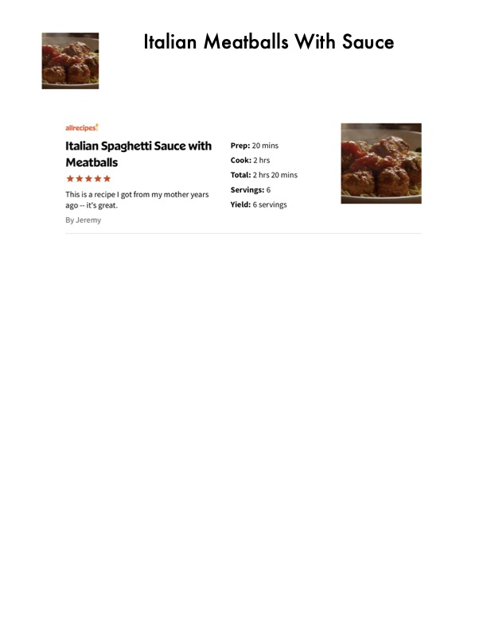

Italian Meatballs With Sauce

Original cookbook page 215
Ingredients
- 2 slices white bread, torn into small pieces
- 1/4 cup whole milk
- 1 pound ground beef
- 1/2 medium onion, minced
- 1/4 cup grated Parmesan cheese
- 1 egg
- 2 cloves garlic, minced
- 1 teaspoon dried Italian seasoning
- 1/2 teaspoon salt
- 1/4 teaspoon black pepper
- 1 jar (24 ounces) marinara sauce
- 1 can (14.5 ounces) diced tomatoes
Instructions
- Preheat oven to 350°F.
- Soak bread pieces in milk for 2 minutes.
- In a large bowl, combine ground beef, onion, Parmesan cheese, egg, garlic, Italian seasoning, salt, pepper, and bread mixture.
- Form into 1-inch meatballs.
- Place meatballs in a 9x13-inch baking dish.
- Pour marinara sauce and diced tomatoes over meatballs.
- Bake for 25-30 minutes until cooked through.
- Serve over spaghetti or with crusty bread.
Recipe #215 from collection